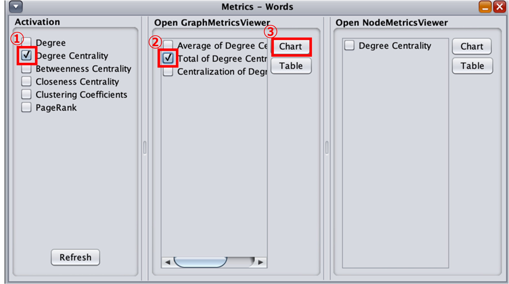
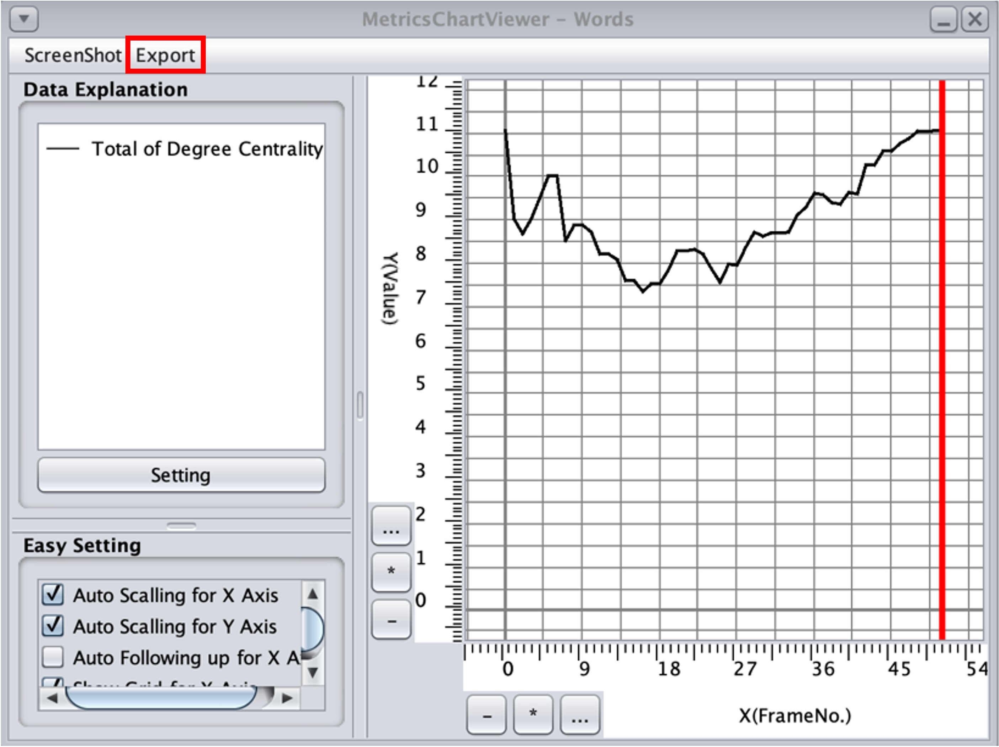
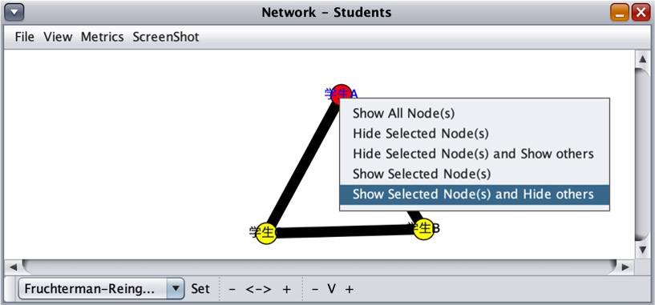

9.1.個人貢献の算出
累計モデル（Aggregative Model）による分析は，分析対象となるグループやそこに所属する個人が活動中に行った対話において，全体としてどれだけの単語間の共起関係を生成することができたか，という点に着目した分析です．グループ全体で生成された単語間の共起関係に対して，各メンバーがそのうちどれだけの単語間の共起関係を生成できていたかを比較することで，グループ対話の特定の内容に対してどれだけ貢献できていたかを測ることが可能です．
この個人貢献を分析するために，グループと所属メンバーそれぞれの次数中心性係数の総和を対話の時系列に沿って算出し，その推移を比較します．
まず，7. 分析単位の設定で紹介した基本的な分析を行う時と同様に[Word]タブから分析対象としたい単語を選択します．ここで選択した単語群全体に対する個人貢献を分析することとなります．
次に，グループ全体の次数中心性係数の総和の推移を算出します．「Network – Words」のウィンドウ内からMetricsを選択し（図9-1），表示された「Metrics - Words」内「Activation」下の①「Degree Centrality」と「Open GraphMetricsViewer」下の②「Total of Degree Centrality」にチェックを入れ，③「Chart」を選択します（図9-2）．

図9-1 Metricsの選択
{kind=link}
図9-2 Metricsでの次数中心性係数の総和の算出
「MetricsChartViewer - Word」ウィンドウが表示され，算出されたグループ全体の次数中心性係数の総和からグラフが生成されます（図9-3）．この後に行うグラフ間の比較のためにExcelなどの外部ツールを利用することから，「Export」から「CSV（be saved to metrics.csv）」を選択し，数値データを保存します．これによって， 「metrics.csv」（ファイルは「kbdex/metrics.csv」にあります）として，今回算出した次数中心性係数の総和の数値データが保存されます．このデータを別のフォルダなどにコピーし，グループの算出結果であることを識別できるようにして残しておきましょう．
{kind=link}
図9-3 計算結果の保存
ここからは，グループに所属しているメンバー個人の次数中心性係数の総和を算出します．サンプルデータでは３人の学生（A〜C）の対話を扱っているため，3人分の計算作業が必要です．
個人ごとの次数中心性係数の総和を算出するため，「Network - Students」のウィンドウから1人目のメンバーノードを選択（左クリック）した後 ，右クリックします（今回は学生A）．表示されるメニューの中下から「Show Selected Node(s) and Hide others」を選択します（図9-４）．
{kind=link}
図9-4 次数中心性係数の総和を算出する個人を選択
これによって，学生Aの発言によって起こった共起関係のみでネットワークが再構築され，学生A個人の次数中心性係数の総和が算出可能な状態になります．ここまで設定が終わったら，先ほどグループの次数中心性係数の総和を算出した手順と全く同じ手順で「MetricsChartViewer - Word」ウィンドウを開き，「Export」からデータを出力します．出力された「metrics.csv」について，出力したデータが学生Aの算出結果であることが識別できるようにした上で別のフォルダにコピーしておきます．
「Network - Students」で行った個人の選択からデータの出力までの手順を，残りのグループメンバー（今回は学生B・C）についても同様に行います．
9.2. 個人貢献比較グラフの作成
グループおよび各グループメンバー全員分の次数中心性係数の総和のデータが出力できた段階で，個人貢献の比較用のグラフを作成します．Excelなどのグラフ作成が可能な表計算ツールにここまでに出力してきたデータをコピーします．図9-5のExcel添付例のように縦軸にグループやメンバー，横軸に対話ターンを設定し，対応する数値データを出力したデータファイルからコピーしていきます．

図9-5 Excelへの算出データ添付例
完成したデータ表を選択し，折れ線グラフを作成すると図9-6のようなグラフが出力されます．

図9-6 サンプルデータから実際に出力した個人貢献比較グラフ例
図9-6のように出力されたグラフから，グループ全体の次数中心性係数の総和の推移に対して，各メンバーの同値の推移がどのようになっているか，に着目し比較分析を行います．各時系列の貢献 については，グループの次数中心性係数の総和に最も数値が近いメンバーは誰であるか，を比較し貢献度の高いメンバーを同定します．継続的な貢献については，グループグラフの推移形に対して最も近い推移形を持っているメンバーが誰であるか，を比較することで貢献度の高いメンバーの同定が可能です（川久保ほか，2021） ．
参考文献
- 川久保アンソニージェイ太稀，大島純，大島律子 (2021). 知識構築活動におけるアイディア向上プロセス分析に基づく学習成果を向上させる条件．日本教育工学会論文誌，45(1), 31-41. https://doi.org/10.15077/jjet.44120